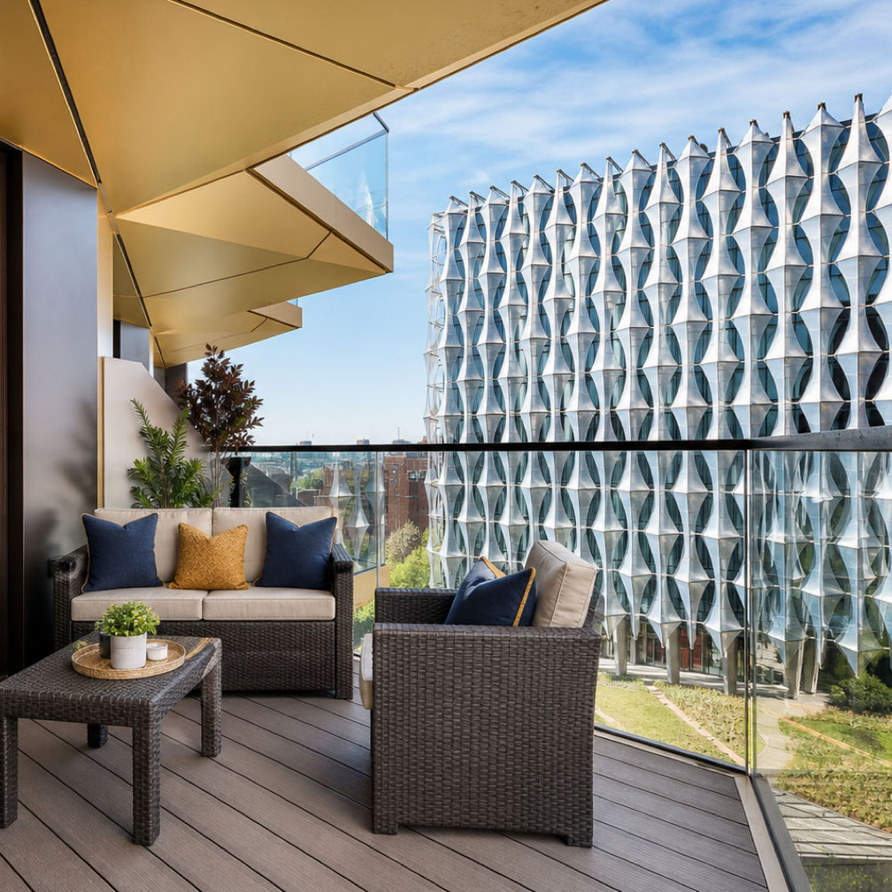
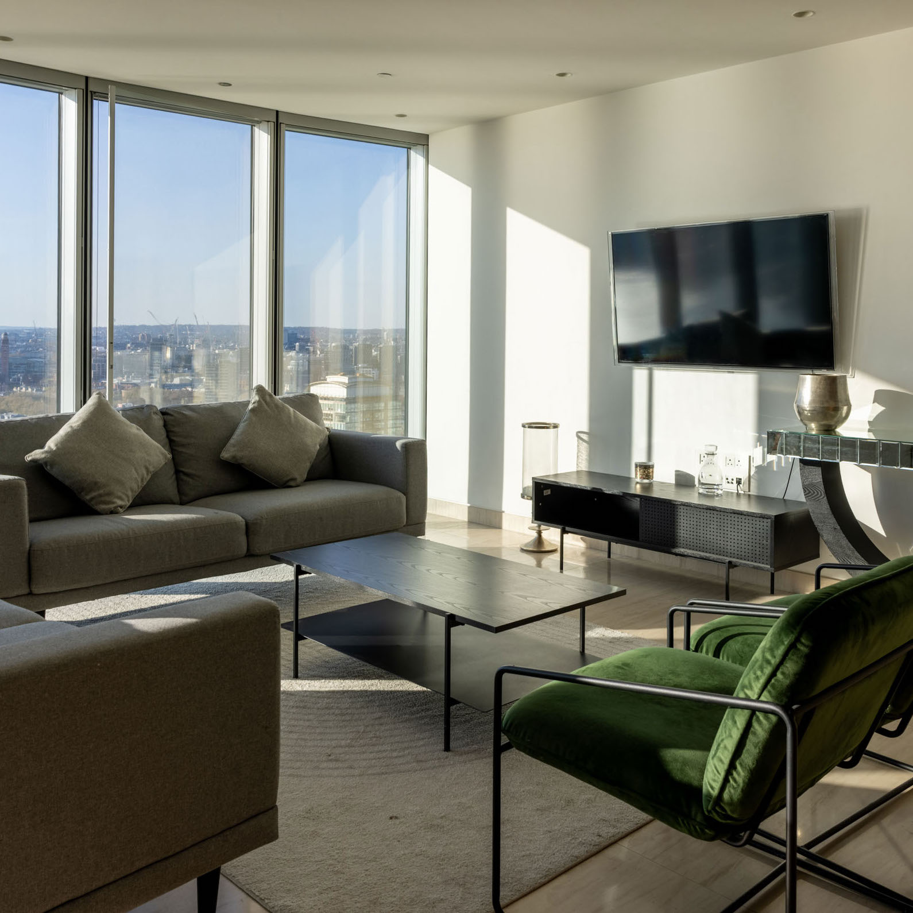
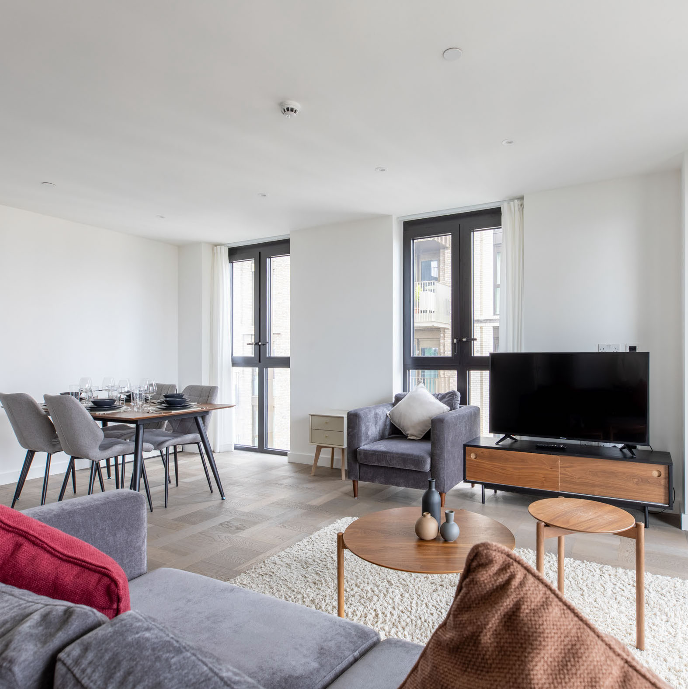
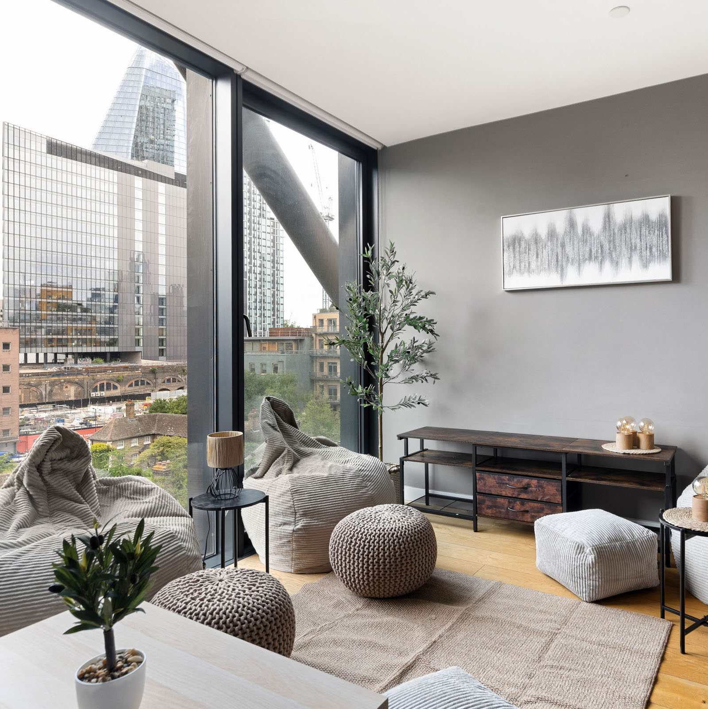
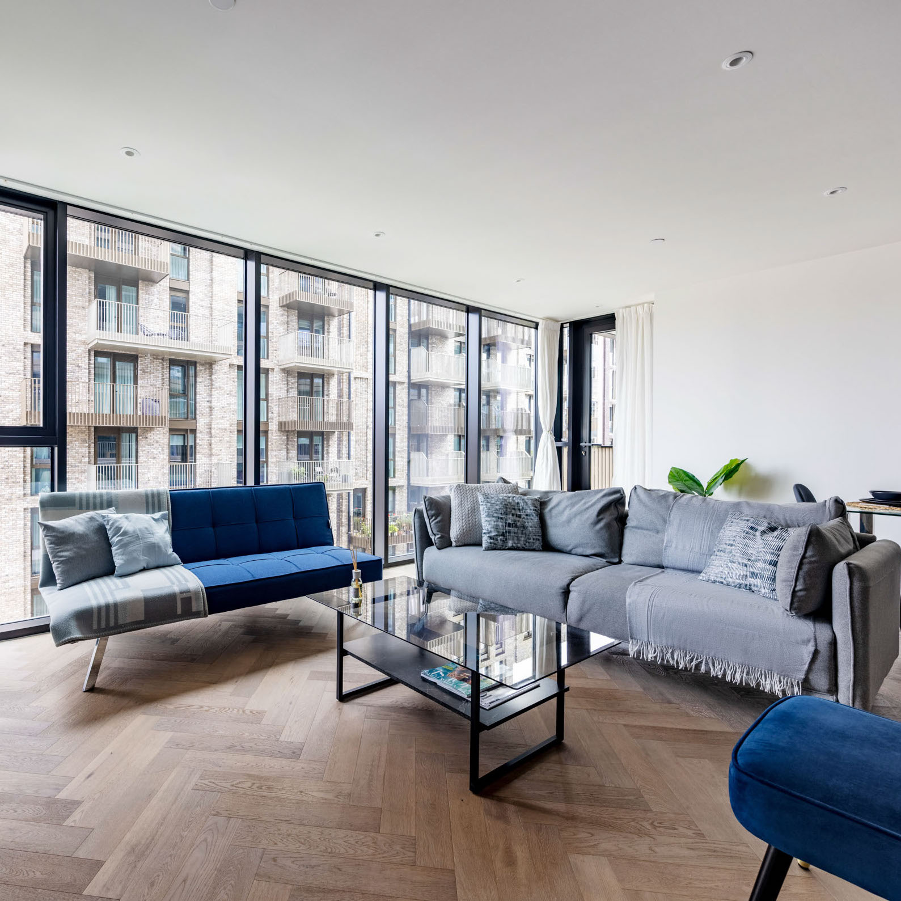
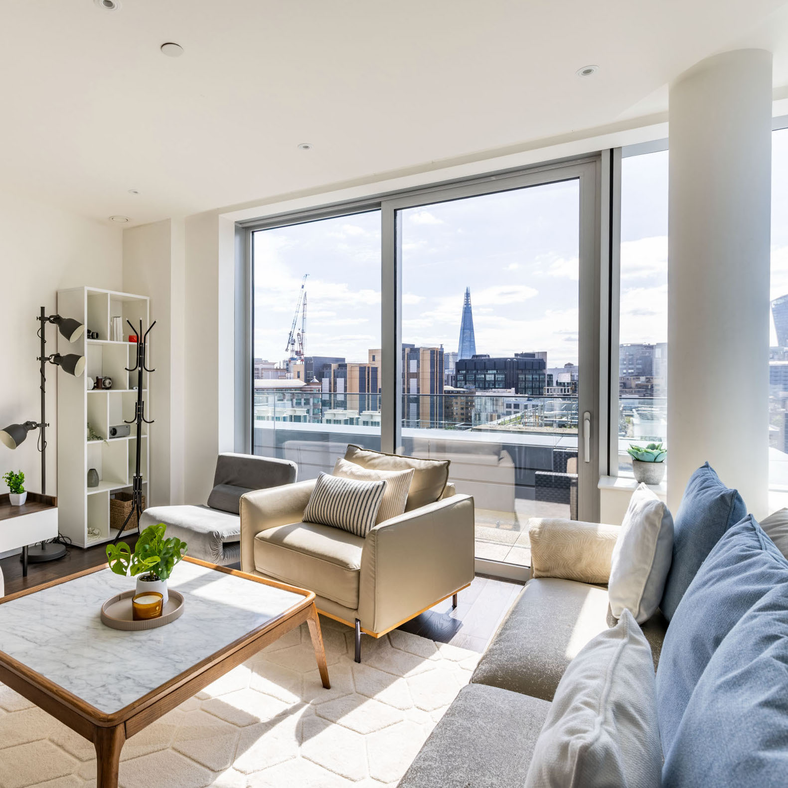
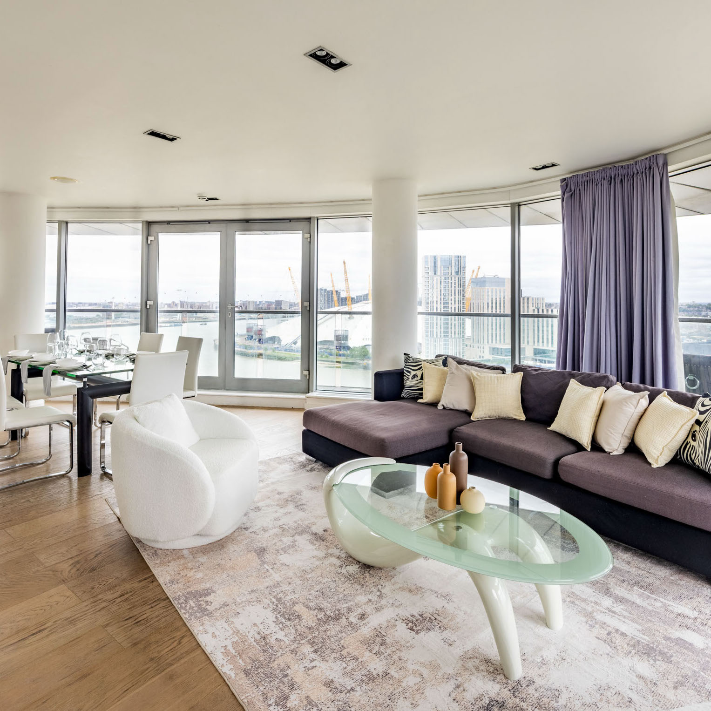
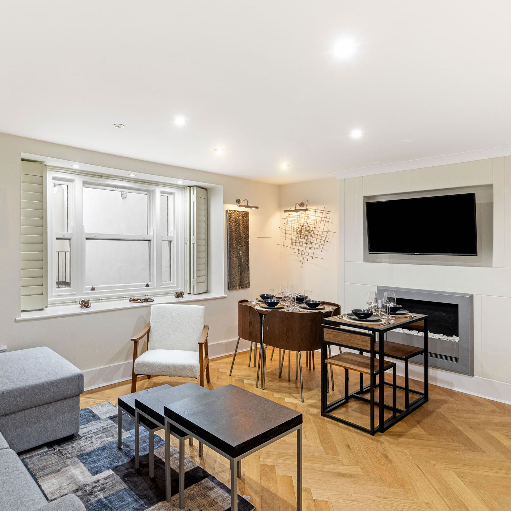

Selected listings
The collection
Eight selected London residences, brought together with a focus on place, space and considered living.

Glacier
A contemporary Vauxhall residence with a private balcony and a front-row view of London’s distinctive riverside architecture.

The Tower
A light-filled high-rise home pairing panoramic city views with calm, contemporary living spaces.

Boxwood Gardens
A generous Tower Bridge apartment with warm timber details, open-plan living and a quiet residential outlook.

Bankside Tower
An elevated Waterloo address framed by floor-to-ceiling glazing and views across London’s architectural skyline.

Merino Gardens
A bright Tower Bridge residence defined by wraparound windows, herringbone floors and relaxed modern interiors.

Neroli
An airy Aldgate apartment with a private terrace and long views towards The Shard and the City.

Penthouse Wharf
A spacious Canary Wharf penthouse with broad river views, curved glazing and generous entertaining spaces.

Queens Gate
A composed South Kensington home blending warm timber, tailored details and a discreet central-London setting.
Explore the Sunnylnn collection and select any residence to view its full gallery.